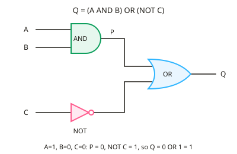

A-level Computer Science Year 12 · Topic 10
Boolean algebra and logic circuits
Boolean algebra and logic circuits is about the logic that every digital device is built from.
We will use logic gates and truth tables, Boolean laws and De Morgan's laws, and Karnaugh maps to simplify expressions.
Then we build half and full adders, use D type flip-flops, and design logic circuits from a problem.
- 5 subtopics
- 290 questions
- Free: 10.1 notes and 10 questions
In this topic
- 10.1Logic gates and truth tablesFree below · 61 questions
- 10.2Boolean algebra laws, De Morgan's laws and expression simplificationOpen in Full Marks · 52 questions
- 10.3Karnaugh mapsOpen in Full Marks · 62 questions
- 10.4Half adders and full addersOpen in Full Marks · 59 questions
- 10.5D-type flip-flops and designing logic circuitsOpen in Full Marks · 56 questions
10.1 · Free notes
Logic gates and truth tables

Key points
- A logic gate is an electronic component that takes one or more binary inputs (0 or 1) and gives one output. A truth table lists every input combination and its output.
- A truth table for n inputs has 2^n rows: 2 inputs give 4 rows, 3 inputs give 8 and 4 inputs give 16. Write the inputs in binary counting order so no row is missed.
- NOT (¬A) inverts its input. AND (A ∧ B) outputs 1 only if both inputs are 1. OR (A ∨ B) outputs 1 if at least one input is 1.
- XOR (A ⊕ B, exclusive OR) outputs 1 only when the inputs are different. Its expression is A.¬B + ¬A.B.
- NAND is NOT AND: it outputs 0 only when both inputs are 1. NOR is NOT OR: it outputs 1 only when both inputs are 0.
- NAND and NOR are universal gates: any other gate can be built from NAND gates alone, or from NOR gates alone. Joining both NAND inputs together gives a NOT gate.
- To draw a circuit from an expression, work from the innermost brackets outwards. Each operator becomes a gate and each variable becomes an input line. Label every intermediate output.
- To complete a truth table for a circuit, add a column for each intermediate output, such as P = A AND B, and then combine the columns. This avoids errors and earns method marks.
- A half adder adds two bits: Sum = A XOR B and Carry = A AND B. A full adder also takes a carry-in, so two half adders and an OR gate are needed.
- OCR also expects the D-type flip-flop, a 1-bit memory element. On the clock edge it stores the value on D and outputs it on Q, so it can be used as a register or memory cell.
- Notation differs by board. AQA uses symbols (¬, ∧, ∨, ⊕). OCR uses the words NOT, AND, OR, XOR, or a bar over the term, a dot and a plus. Learn both forms.
In more detail
- Worked NAND: outputs 1, 1, 1, 0 for inputs 00, 01, 10, 11; it is universal, since NOT A = A NAND A.
- Worked expression from a table: output 1 only for (A, B) = 01 and 10 → Q = Ā.B + A.B̄ = A XOR B.
- Worked three inputs: Q = A.B + C is 1 in the four rows with C = 1, plus row 110 → 5 of the 8 rows.
- Worked NOR: Q = NOT(A + B) is 1 only when both inputs are 0.
- Worked circuit from expression: Q = (A + B).C̄ needs an OR gate for A and B, a NOT gate on C, and an AND gate to combine them.
Practice
Logic gates and truth tables: 10 questions
Pick an answer to check it, or open the answer for the explanation.
1. What is the output of an XOR gate when both inputs are 1?
- 0
- 1
- Undefined
- Equal to the clock signal
Show answer
A: 0. XOR outputs 1 only when the inputs are different. With both inputs 1 they are the same, so the output is 0.
2. A truth table is needed for a circuit with 4 independent inputs. How many rows does it need?
- 32
- 8
- 16
- 4
Show answer
C: 16. A truth table needs 2^n rows. With n = 4 that is 2^4 = 16 rows, one for each possible input combination.
3. For which inputs does a two-input NOR gate output 1?
- A = 0 and B = 0
- A = 0 and B = 1
- A = 1 and B = 0
- A = 1 and B = 1
Show answer
A: A = 0 and B = 0. NOR is NOT OR. OR is 0 only when both inputs are 0, so NOR is 1 only for A = 0 and B = 0.
4. Which gate produces the Carry output of a half adder?
- XOR
- OR
- AND
- NAND
Show answer
C: AND. A half adder has Sum = A XOR B and Carry = A AND B. A carry is generated only when both bits are 1.
5. A half adder adds A = 1 and B = 1. What are the Sum and Carry outputs?
- Sum 0, Carry 1
- Sum 1, Carry 0
- Sum 1, Carry 1
- Sum 0, Carry 0
Show answer
A: Sum 0, Carry 1. 1 + 1 = 10 in binary. Sum = 1 XOR 1 = 0 and Carry = 1 AND 1 = 1.
6. Both inputs of a NAND gate are connected to the same signal A. What does the circuit act as?
- An OR gate
- A NOT gate
- An AND gate
- An XOR gate
Show answer
B: A NOT gate. NAND(A, A) = NOT(A AND A) = NOT A. This is why NAND is a universal gate.
7. For Q = (A XOR B) AND C, in how many of the 8 rows of the truth table is Q = 1?
- 3
- 2
- 1
- 4
Show answer
B: 2. Q = 1 needs C = 1 and A ≠ B. There are 2 such combinations of A and B, so 2 rows give Q = 1.
8. Which single gate is equivalent to a NOR gate whose inputs are NOT A and NOT B?
- OR
- NAND
- AND
- XOR
Show answer
C: AND. NOR(¬A, ¬B) = NOT(¬A OR ¬B) = A AND B by De Morgan's law, so the circuit behaves as an AND gate.
9. Which statement about gates is correct?
- XOR outputs 1 if both inputs are 1
- NAND outputs 1 unless both inputs are 1
- NOR outputs 1 if either input is 1
- OR outputs 0 if either input is 0
Show answer
B: NAND outputs 1 unless both inputs are 1. NAND is NOT AND, so it is 0 only when both inputs are 1. The other statements describe AND/OR/NOR behaviour incorrectly.
10. A circuit has 3 inputs. How many different input combinations must a complete truth table show?
- 6
- 8
- 3
- 9
Show answer
B: 8. Each input can be 0 or 1, so there are 2 × 2 × 2 = 2^3 = 8 combinations.
Keep going in Full Marks
Full Marks has 61 questions on Logic gates and truth tables (51 more than here), set out in practice levels. You also get notes and 3D models for all 5 subtopics of Boolean algebra and logic circuits, plus games, timed exams and past papers.